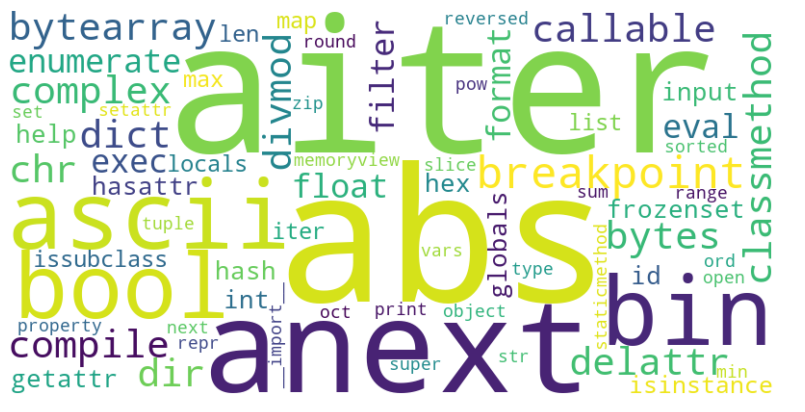

Table of contents
{: .text-delta } 1. TOC {:toc}os Library in Python
Note: Import os at the beginning of your script: import os
| Function | Example |
|---|---|
| Get Current Working Directory | cwd = os.getcwd()print(f"Current Working Directory: {cwd}") |
| Change Directory | os.chdir("/path/to/directory")print(f"Changed Directory: {os.getcwd()}") |
| List Directory Contents | contents = os.listdir(".")print(f"Directory Contents: {contents}") |
| Make New Directory | os.makedirs("new_dir/sub_dir", exist_ok=True)print("Directories created") |
| Remove Directory | os.rmdir("new_dir/sub_dir")print("Sub-directory removed") |
| Remove File | os.remove("example.txt")print("File removed") |
| Rename File or Directory | os.rename("old_name.txt", "new_name.txt")print("File renamed") |
| Get File Size | size = os.path.getsize("example.txt")print(f"File size: {size} bytes") |
| Check if Path Exists | exists = os.path.exists("example.txt")print(f"Path exists: {exists}") |
| Check if Path is File | is_file = os.path.isfile("example.txt")print(f"Is a file: {is_file}") |
| Check if Path is Directory | is_dir = os.path.isdir("example")print(f"Is a directory: {is_dir}") |
| Join Paths | path = os.path.join("folder", "subfolder", "file.txt")print(f"Joined path: {path}") |
| Get Absolute Path | absolute_path = os.path.abspath("example.txt")print(f"Absolute path: {absolute_path}") |
| Get Directory Name | dir_name = os.path.dirname("/path/to/example.txt")print(f"Directory name: {dir_name}") |
| Get Base Name | base_name = os.path.basename("/path/to/example.txt")print(f"Base name: {base_name}") |
| Split Path | head, tail = os.path.split("/path/to/example.txt")print(f"Head: {head}, Tail: {tail}") |
| Split File Extension | root, ext = os.path.splitext("example.txt")print(f"Root: {root}, Extension: {ext}") |
| Execute a Shell Command | os.system("echo Hello World") |
| Get Environment Variables | path = os.getenv("PATH")print(f"PATH: {path}") |
| Set Environment Variables | os.environ["MY_VAR"] = "my_value"print(f"MY_VAR: {os.getenv('MY_VAR')}") |
| Walk Through Directory Tree | for dirpath, dirnames, filenames in os.walk("."):print(f"Found directory: {dirpath}")for file_name in filenames:print(f"\t{file_name}") |
| File Permissions | os.chmod("example.txt", 0o644)print("Permissions changed") |
| File Ownership | os.chown("example.txt", uid, gid)print("Ownership changed") |
| Create a Symbolic Link | os.symlink("source.txt", "link.txt")print("Symbolic link created") |
| Create a Hard Link | os.link("source.txt", "hard_link.txt")print("Hard link created") |
| Get File Statistics | stats = os.stat("example.txt")print(f"File statistics: {stats}") |
os.path in Python
os.path is a part of Python's standard library that helps you work with file paths easily. os.path functions work on all operating systems like Windows, macOS, and Linux.
You don’t have to worry about different path styles on different systems.
Here is an example which will include all main functianlities of os.path.
import os
# Example file path
example_path = "example/directory/file.txt"
# Get the directory name
directory = os.path.dirname(example_path)
print(f"Directory name: {directory}") # Output: example/directory
# Get the base name
file_name = os.path.basename(example_path)
print(f"File name: {file_name}") # Output: file.txt
# Join paths
joined_path = os.path.join("example", "directory", "newfile.txt")
print(f"Joined path: {joined_path}") # Output: example/directory/newfile.txt
# Check if path exists
path_exists = os.path.exists(example_path)
print(f"Path exists: {path_exists}")
# Check if it is a file
is_file = os.path.isfile(example_path)
print(f"Is a file: {is_file}")
# Check if it is a directory
is_directory = os.path.isdir(directory)
print(f"Is a directory: {is_directory}")
# Get the absolute path
absolute_path = os.path.abspath(example_path)
print(f"Absolute path: {absolute_path}")
# Split the path into directory and file name
split_path = os.path.split(example_path)
print(f"Split path: {split_path}") # Output: ('example/directory', 'file.txt')
# Get the file extension
file_extension = os.path.splitext(example_path)[1]
print(f"File extension: {file_extension}") # Output: .txt
# Example relative path
relative_path = os.path.relpath(example_path, start="example")
print(f"Relative path: {relative_path}") # Output: directory/file.txt
# Check the size of the file (only if it exists)
if os.path.exists(example_path):
file_size = os.path.getsize(example_path)
print(f"File size: {file_size} bytes")
# Check the last modification time (only if it exists)
if os.path.exists(example_path):
modification_time = os.path.getmtime(example_path)
print(f"Last modification time: {modification_time}")
# Demonstrate creating a new directory
new_directory_path = "example/new_directory"
if not os.path.exists(new_directory_path):
os.makedirs(new_directory_path)
print(f"Created new directory: {new_directory_path}")
else:
print(f"Directory already exists: {new_directory_path}")
This program shows the following os.path functions:
- os.path.dirname(): Get the directory name from a path.
- os.path.basename(): Get the file name from a path.
- os.path.join(): Join multiple path components.
- os.path.exists(): Check if a path exists.
- os.path.isfile(): Check if a path is a file.
- os.path.isdir(): Check if a path is a directory.
- os.path.abspath(): Get the absolute path.
- os.path.split(): Split a path into directory and file name.
- os.path.splitext(): Get the file extension.
- os.path.relpath(): Get the relative path.
- os.path.getsize(): Get the size of a file.
- os.path.getmtime(): Get the last modification time of a file.
- os.makedirs(): Create a new directory.
Here is an example showing how os.path can be used so that the code handles both Windows and MAC folder systems without problems:
import os
# Example file path components
folder = "example"
subfolder = "directory"
filename = "file.txt"
# Join the components into a full path
full_path = os.path.join(folder, subfolder, filename)
print(f"Full path: {full_path}")
# Check if the path exists
path_exists = os.path.exists(full_path)
print(f"Path exists: {path_exists}")
# Get the absolute path
absolute_path = os.path.abspath(full_path)
print(f"Absolute path: {absolute_path}")
# Example output for different operating systems
if os.name == 'nt': # Windows
print(f"Windows style path: {full_path}")
else: # Mac/Linux
print(f"Unix style path: {full_path}")
By using os.path, you can make sure the code works in both windows and Linux/Mac and handles (backslash \ for Windows and forward slash / for Mac/Linux).
Python built-in functions
These are built-in functions that are available to Python interpreter always. You don't have to pip install anything for this.
I compiled the list from the following link
| Function Description & Syntax | Usage Example |
|---|---|
abs(x): Returns the absolute value of a number. |
abs(-5) returns 5 |
aiter(iterable): Returns an asynchronous iterator for an asynchronous iterable. |
async for item in aiter(async_iterable): pass |
all(iterable): Returns True if all elements of an iterable are true. |
all([True, True, False]) returns False |
anext(async_iterator): Retrieves the next item from an asynchronous iterator. |
await anext(async_iterator) |
any(iterable): Returns True if any element of an iterable is true. |
any([False, True, False]) returns True |
ascii(object): Returns a string representation of an object with non-ASCII characters escaped. |
ascii('ü') returns '\\xfc' |
bin(x): Converts an integer to a binary string. |
bin(10) returns '0b1010' |
bool(x): Converts a value to a boolean, returning either True or False. |
bool(1) returns True |
breakpoint(): Drops you into the debugger at the call site. |
breakpoint() |
bytearray([source[, encoding[, errors]]]): Returns a new array of bytes. |
bytearray(b'hello') returns bytearray(b'hello') |
bytes([source[, encoding[, errors]]]): Returns a new bytes object. |
bytes('hello', 'utf-8') returns b'hello' |
callable(object): Returns True if the object appears callable. |
callable(len) returns True |
chr(i): Returns the character that represents the specified unicode. |
chr(97) returns 'a' |
classmethod(function): Converts a method into a class method. |
class C: @classmethod def f(cls): pass |
compile(source, filename, mode, flags=0, dont_inherit=False, optimize=-1): Compiles source into a code object that can be executed by exec() or eval(). |
compile('print(1)', '', 'exec') |
complex([real[, imag]]): Creates a complex number. |
complex(1, 2) returns (1+2j) |
delattr(object, name): Deletes the named attribute from an object. |
delattr(obj, 'attr') |
dict(**kwargs): Creates a new dictionary. |
dict(a=1, b=2) returns {'a': 1, 'b': 2} |
dir([object]): Returns a list of the attributes and methods of any object. |
dir() |
divmod(a, b): Returns a tuple containing the quotient and remainder when dividing two numbers. |
divmod(10, 3) returns (3, 1) |
enumerate(iterable, start=0): Returns an enumerate object. |
enumerate(['a', 'b'], 1) returns [(1, 'a'), (2, 'b')] |
eval(expression, globals=None, locals=None): Evaluates the specified expression. |
eval('1 + 2') returns 3 |
exec(object[, globals[, locals]]): Executes the specified code. |
exec('print("Hello, World!")') |
filter(function, iterable): Constructs an iterator from elements of iterable for which function returns true. |
filter(lambda x: x > 0, [1, -2, 3, 0]) |
float([x]): Converts a number or string to a floating point number. |
float('3.14') returns 3.14 |
format(value[, format_spec]): Formats a value using a format specification. |
format(255, '02x') returns 'ff' |
frozenset([iterable]): Returns a new frozenset object, optionally with elements taken from iterable. |
frozenset([1, 2, 3]) returns frozenset({1, 2, 3}) |
getattr(object, name[, default]): Returns the value of the named attribute of an object. |
getattr(obj, 'attr', None) |
globals(): Returns a dictionary representing the current global symbol table. |
globals() |
hasattr(object, name): Returns True if the object has the named attribute. |
hasattr(obj, 'attr') |
hash(object): Returns the hash value of the object. |
hash('hello') |
help([object]): Invokes the built-in help system. |
help(print) |
hex(x): Converts an integer to a hexadecimal string. |
hex(255) returns '0xff' |
id(object): Returns the identity of an object. |
id(3) |
input([prompt]): Reads a line from input. |
input('Enter your name: ') |
int([x[, base]]): Converts a number or string to an integer. |
int('10') returns 10 |
isinstance(object, classinfo): Returns True if the object is an instance of the class or of a subclass thereof. |
isinstance(3, int) |
issubclass(class, classinfo): Returns True if the class is a subclass of classinfo. |
issubclass(bool, int) |
iter(object[, sentinel]): Returns an iterator object. |
iter([1, 2, 3]) |
len(s): Returns the length of an object. |
len('hello') returns 5 |
list([iterable]): Creates a new list. |
list('hello') returns ['h', 'e', 'l', 'l', 'o'] |
locals(): Updates and returns a dictionary representing the current local symbol table. |
locals() |
map(function, iterable, ...): Applies function to every item of iterable and returns an iterator. |
map(str.upper, ['a', 'b', 'c']) |
max(iterable, *[, key, default]): Returns the largest item in an iterable or the largest of two or more arguments. |
max([1, 2, 3]) |
memoryview(obj): Returns a memory view object. |
memoryview(b'abc') |
min(iterable, *[, key, default]): Returns the smallest item in an iterable or the smallest of two or more arguments. |
min([1, 2, 3]) |
next(iterator[, default]): Retrieves the next item from the iterator. |
next(iter([1, 2, 3])) |
object(): Returns a new featureless object. |
object() |
oct(x): Converts an integer to an octal string. |
oct(8) returns '0o10' |
open(file, mode='r', buffering=-1, encoding=None, errors=None, newline=None, closefd=True, opener=None): Opens a file and returns a corresponding file object. |
open('file.txt', 'r') |
ord(c): Returns the Unicode code point for a single character. |
ord('a') returns 97 |
pow(x, y[, z]): Returns x to the power of y; if z is present, returns x to the power of y, modulo z. |
pow(2, 3) returns 8 |
print(*objects, sep=' ', end='\n', file=sys.stdout, flush=False): Prints the objects to the text stream file, separated by sep and followed by end. |
print('hello') |
property(fget=None, fset=None, fdel=None, doc=None): Returns a property attribute. |
class C: @property def x(self): return self._x |
range(stop): Returns an immutable sequence of numbers from 0 to stop |
repr(object): Returns a string containing a printable representation of an object. |
reversed(seq): Returns a reversed iterator. |
list(reversed([1, 2, 3])) returns [3, 2, 1] |
round(number[, ndigits]): Rounds a number to a given precision in decimal digits. |
round(3.14159, 2) returns 3.14 |
set([iterable]): Returns a new set object, optionally with elements taken from iterable. |
set([1, 2, 2, 3]) returns {1, 2, 3} |
setattr(object, name, value): Sets the value of the named attribute of an object. |
setattr(obj, 'attr', 10) |
slice(stop): Returns a slice object representing the set of indices specified by range(start, stop, step). |
slice(1, 5, 2) returns slice(1, 5, 2) |
sorted(iterable, *, key=None, reverse=False): Returns a new sorted list from the items in iterable. |
sorted([3, 1, 2]) returns [1, 2, 3] |
staticmethod(function): Converts a method into a static method. |
class C: @staticmethod def f(): pass |
str(object=''): Returns a string version of object. |
str(123) returns '123' |
sum(iterable, /, start=0): Sums the items of an iterable from left to right and returns the total. |
sum([1, 2, 3]) returns 6 |
super([type[, object-or-type]]): Returns a proxy object that delegates method calls to a parent or sibling class of type. |
super().method() |
tuple([iterable]): Returns a tuple object, optionally with elements taken from iterable. |
tuple([1, 2, 3]) returns (1, 2, 3) |
type(object): Returns the type of an object. |
type(123) returns <class 'int'> |
vars([object]): Returns the __dict__ attribute for a module, class, instance, or any other object with a __dict__ attribute. |
vars() |
zip(*iterables): Returns an iterator of tuples, where the i-th tuple contains the i-th element from each of the argument sequences or iterables. |
list(zip([1, 2, 3], ['a', 'b', 'c'])) returns [(1, 'a'), (2, 'b'), (3, 'c')] |
__import__(name, globals=None, locals=None, fromlist=(), level=0): Invoked by the import statement. |
__import__('math') |